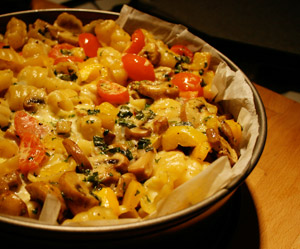

Pastaauflauf
4,5 von 6Pasta al dente garen. Zwiebeln, Peperoni, Champignons, Cherrytoamten in einer Pfanne andämpfen. Mozzarellastücke und Petersilie darunter geben. Die abgetropfeten Teigwaren dazu geben und alles mischen. In eine Auflaufform geben und nach belieben würzen. Einen Guss aus 2 Eier, 100 g Sprinz sowie etwas Rahm und Milch, Salz und Peffer darüber geben. 15 Minunten im Ofen bei 200 g überbacken.
